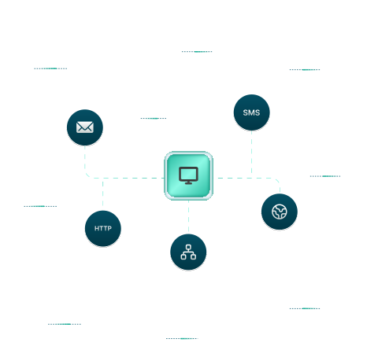

A · штрихи выходят с шагом 0.7 с

B · штрихи приходят в монитор с шагом 0.7 с
Итог: порядок B, отскок 0.3 (значения из spec)
Монитор крупно: размер отскока (порядок B)
1 · без отскока
2 · малый (0.15)
3 · средний (0.3)
4 · заметный (0.5)